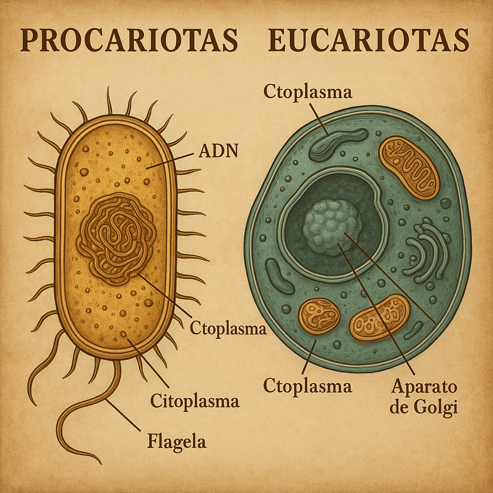

Diferencias y similitudes entre eucariotas y procariotas.
Desde bacterias hasta células humanas.
Una célula procariota es un tipo de célula que se caracteriza por no tener un núcleo definido, ya que su material genético se encuentra libre en el citoplasma, en una región llamada nucleoide. Además, carece de orgánulos rodeados por membranas, como las mitocondrias o el aparato de Golgi. Estas células son generalmente pequeñas, de estructura sencilla y pertenecen a organismos unicelulares, como las bacterias y las arqueas. Su ADN suele tener forma circular, y se reproducen de manera rápida mediante un proceso llamado fisión binaria. A pesar de su simplicidad, las células procariotas desempeñan un papel fundamental en el equilibrio de los ecosistemas y en muchos procesos biológicos.
Una célula eucariota es un tipo de célula que se caracteriza por tener un núcleo definido, rodeado por una membrana, donde se encuentra protegido su material genético (ADN). Estas células pueden formar organismos unicelulares, como algunos protozoos, o multicelulares, como los animales, plantas y hongos. Son más grandes y complejas que las procariotas, y su reproducción puede ser asexual (por mitosis) o sexual (por meiosis).
>